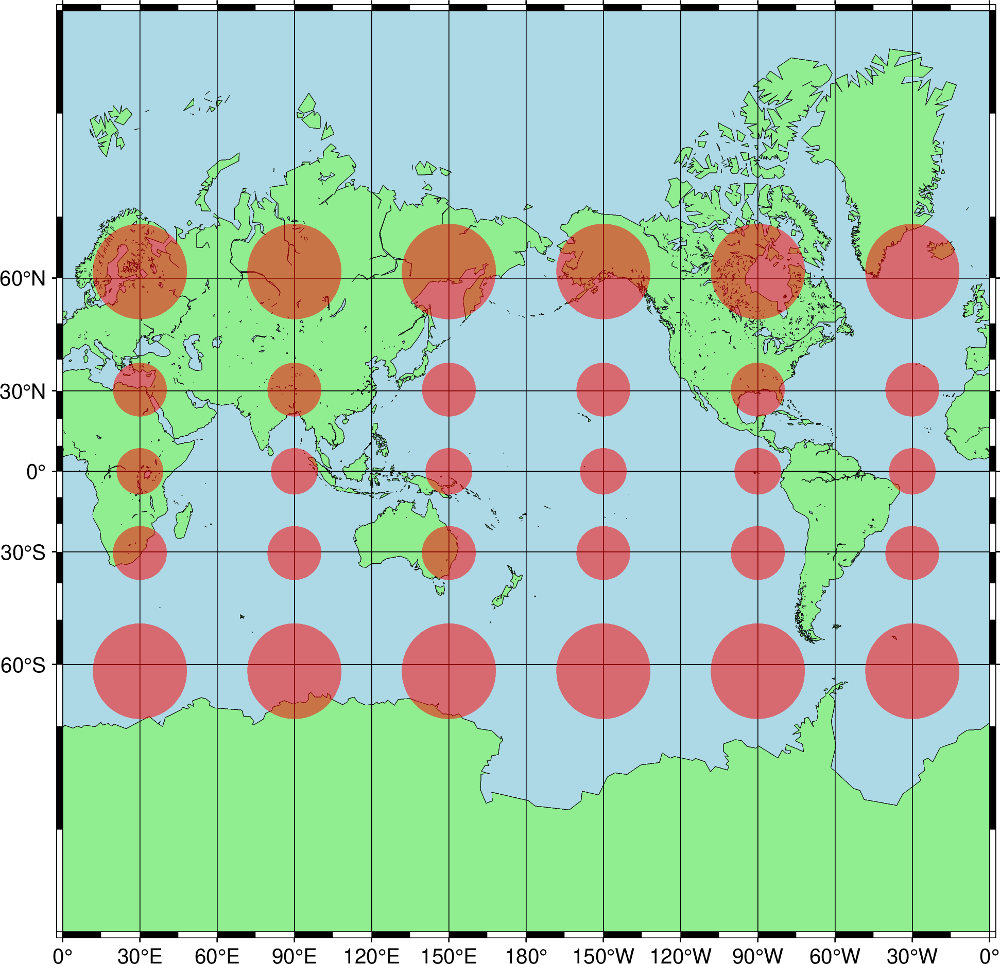

如何选择地图投影
地图投影就是将三维球形（或椭球形）地球表面投影到二维的纸张上， 即使用数学公式将球面坐标与平面坐标对应起来，这个过程必然会导致地球表面变形。 根据绘制地图的目的，某些变形是可以接受的，而另一些则是不可接受的； 因此，存在不同的地图投影，以牺牲其他属性为代价来保留球体的某些属性。
地图投影变形
地图投影变形可以分为四个方面：角度，方向，距离和面积。 不同投影对应的变形特征不同：
保角投影，也称为等角投影或正形投影。在地图上任意一点，投影后角度和形状不变， 但会牺牲面积准确性，常用于对角度要求严格的应用，比如航海导航。
保方向投影，也称为等方向投影、方位投影或正轴投影。投影中心点到地图上任何一点的方向保持不变， 通常会牺牲形状、面积和距离的准确性，常用于对方向要求严格的应用，例如航空导航
保距离投影，也称等距投影。保证地图上的某些线段（通常是从投影中心点到任何一点的经线， 或沿着特定的平行线）的尺度是正确的，通常会牺牲形状和面积的准确性，常用于对距离要求严格的应用， 例如交通线或管线绘制测量
保面积投影，也称等面积投影或正积投影。保证了地图上任何区域的面积比例与地球上的实际面积比例一致， 牺牲形状和角度的准确性，通常用于对面积要求严格的地图，例如土地测量，森林覆盖率统计等。
任意投影，不保上述任何元素的投影。
衡量投影变形的方法有多种，最常用的为变形椭圆。下图绘制了在墨卡托投影（-JM）下的变形椭圆， 该投影为保角投影。投影中心坐标为 (0, 0)，在投影中心处面积变形最小。 在同一经度方向的变形是恒定的；在维度方向，离投影中心越远，变形越大。
{kind=link}

地图投影分类
投影面
上一章节介绍了投影几何特征的变形，并可据此特征作为地图分类依据。 另外一种常见的分类方法为根据投影面分类。通常可以分为如下三种， 假定都为正轴投影（见投影面与地轴的关系）。
平面/方位投影：投影到一个平面上。特点为纬线是同心圆，经线是辐射状的直线
圆柱投影：纬线是同心圆弧，经线是辐射状的直线，在标准纬线（圆锥体接触地球的线）附近失真最小
圆锥投影：纬线（平行线）和经线（垂直线）通常是等距的平行线，形成直角网格
在实际使用中，为了保证多种因素不变形或者变形较小，出现了很多伪圆柱、伪圆锥投影或者混合投影， 这些投影并不满足上述对应投影特征。
投影面与地球的关系
投影面与地球之间的关系可以是相切或者投影面割地球（即投影面穿过地球）。 相切是最常见的，但这种方式在除切点和切线以外的区域，变形越来越大。 为防止最远端变形太大，可以使用割地球的形式，在割线以外的地方，变形越来越大。 割地球程度越大，越能减小最远端的变形。上述的切点即为投影设置的投影中心， 切线或者割线即为标准纬线。
投影面与地轴的关系
根据投影面和地轴之间的关系，投影可以分为
正轴投影：投影体/面的轴线与地球的旋转轴重合（或平行），平面正轴投影即地轴垂直于投影平面， 圆柱/圆锥正轴投影即为轴线与地轴重合。
横轴投影：投影体的轴线垂直于地球的旋转轴（例如，横轴墨卡托投影和我国常用的高斯-克吕格投影）
斜轴投影：投影体的轴线既不平行也不垂直于地球的旋转轴，适用于绘制斜向延伸的区域（例如，沿着大圆航线的区域）
地图投影选择
地图投影应以满足制图需要为主要目标，即根据需要保的要素或避免的变形选择， 在此之外，则很大程度上以追求美观为主。
一些简单地初步选择
用于小范围的大比例尺地图，使用横轴墨卡托投影，或我国常采用的高斯-克吕格投影等，例如-JT、-JU
用于大范围（大洲，全球等）的小比例尺地图，常使用混合投影，例如-JH、-JJ、-JK、-JM、-JN、-JQ、-JV
低纬度国家，使用圆柱投影，例如-JC、-JM、-JQ、-JY
中纬度国家，使用圆锥投影，例如-JA、-JB、-JL
极区范围，使用方位投影等，例如-JG、-JE、-JS
纵向狭长的范围或国家，使用横轴圆柱投影等，例如-JC
沿倾斜方向的范围，使用倾斜投影，例如-JO
以外太空的角度看地球，使用-JG